Cadence-synchronised pneumatic breathing guidance for amateur runners.
Breatho is a soft wearable respiratory guidance system for amateur runners. It senses the rhythm of a runner’s steps and translates it into gentle cycles of pressure around the abdomen, using inflation and release to suggest when to inhale and exhale.
Breatho delivers respiratory guidance through body-centred pressure cues, reducing dependence on continuous visual or auditory attention. The research examines whether a wearable system can make breathing rhythm perceptible during motion and support runners in learning a stable relationship between steps and respiration.
Final research prototype
Research · Wearable Design · Pneumatic Prototyping · Interaction Design · User Testing
01
Research gap: respiratory guidance during running
Runners can monitor performance, but still lack a low-distraction way to perceive and stabilise breathing rhythm during motion.
Wearable devices make pace, distance, and heart rate continuously available. These measurements describe performance, but they do not tell novice runners how to coordinate inhalation and exhalation with their steps. Stable locomotor–respiratory coupling rarely emerges spontaneously, and changes in pace, fatigue, and movement make the pattern difficult to maintain.
Early modality exploration considered audio, vibrotactile, and pneumatic guidance. Audio competes with environmental sound, while vibration can be masked by foot strike and whole-body motion. Cyclical pressure around the abdomen has a closer physical correspondence with diaphragmatic expansion and can communicate both the phase and duration of a breath. This comparison motivated the use of pneumatic feedback.
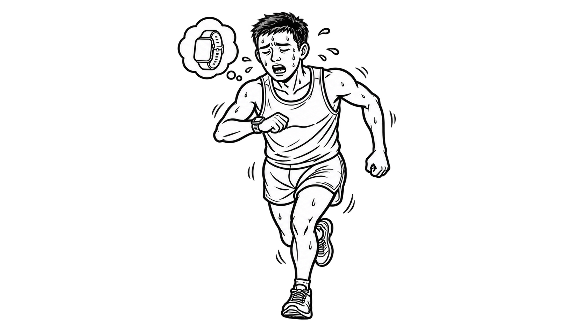
Performance data is available during a run, while breathing rhythm remains difficult to regulate
02
LRC and the pneumatic approach
A step-to-breath relationship provides the timing model; pressure makes that timing perceptible on the body.
Locomotor–respiratory coupling, or LRC, describes a stable numerical relationship between stride frequency and breathing frequency. Ratios such as 2:1 and 3:2 indicate how many steps occur within one breathing cycle. Breatho uses a selected LRC ratio to translate repeated foot strikes into an inhale–exhale rhythm.
Visual guidance demands attention, audio competes with the outdoor environment, and vibration can be obscured by whole-body movement. Pneumatic feedback instead expands and releases against the abdomen, creating a cue that corresponds physically with breathing while leaving vision and hearing available.
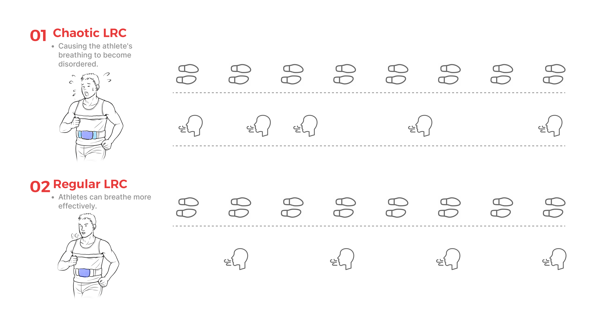
Irregular breathing relative to foot strikes, compared with a stable LRC pattern
03
How Breatho works
Sensing, rhythm mapping, and pneumatic actuation operate as one feedback loop.
An inertial measurement unit detects steps and updates cadence. The controller maps this rhythm to the selected LRC cycle. The airbags gradually inflate during the inhalation phase, then release pressure to indicate exhalation. Frequency communicates when to breathe, while inflation level controls how strongly the cue is felt.
A respiration belt records the runner’s breathing pattern, and pressure sensors support repeatable actuation. The interface connects the two wearable modules, selects Test, Train, Run, or Relieve mode, and displays live pressure and respiratory signals during development and evaluation.
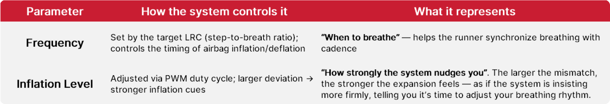
Two parameters shape the timing and strength of pneumatic guidance
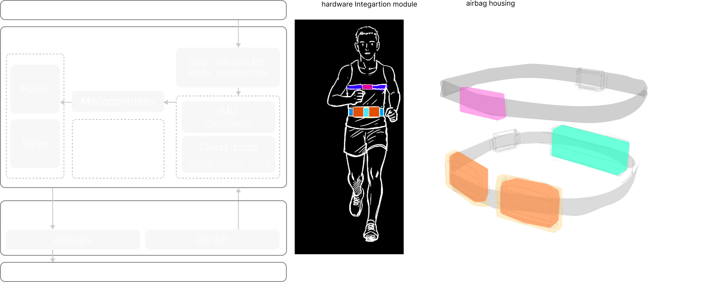
System operation and wearable output
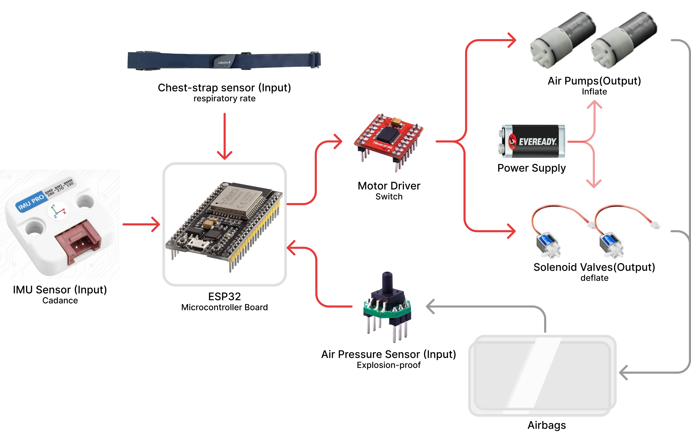
Hardware architecture
04
Wearable development
The prototype combines respiratory sensing, paired abdominal airbags, pressure control, and a compact hardware module across two connected belts.
The upper belt carries the respiration sensor. The lower belt positions two airbags laterally around the abdomen and integrates the pumps, valves, pressure sensors, tubing, and controller. Separating sensing from actuation helped maintain contact with the body while allowing the pneumatic components to be repositioned during prototyping.
The paired airbags support distributed pressure rather than a single concentrated cue. Their placement and enclosure were refined through fitting studies before the complete system was tested during running.
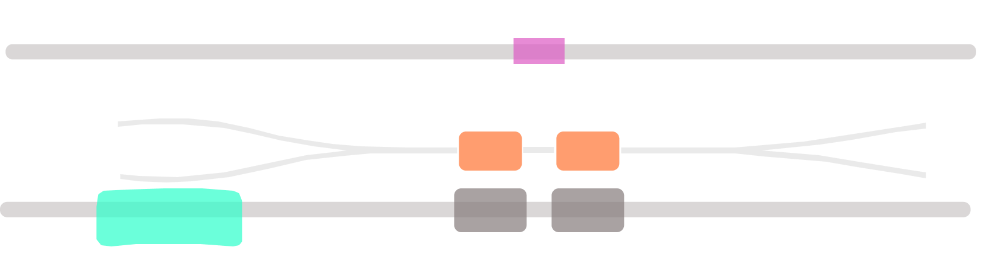
Wearable component arrangement
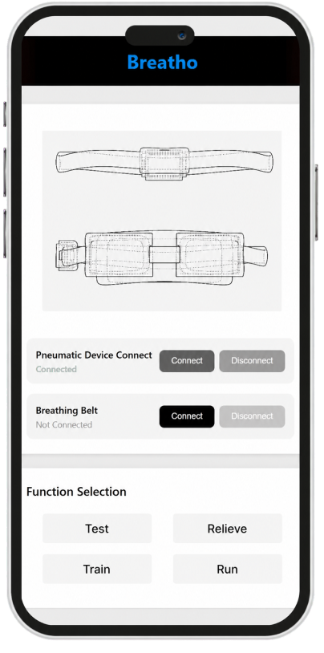
Device connection and mode selection
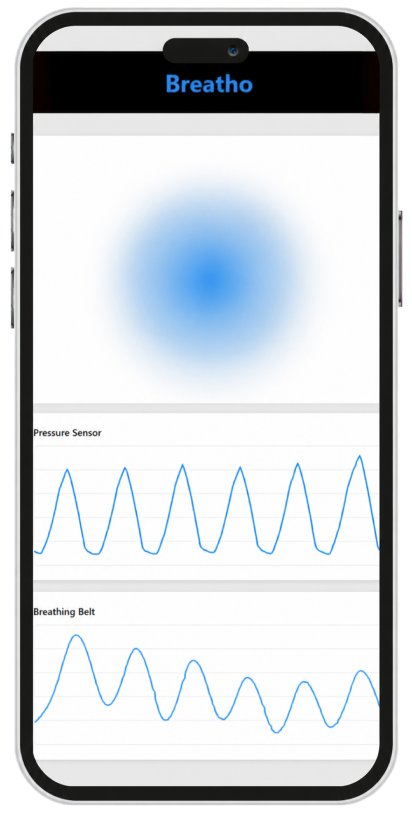
Live pneumatic and respiratory monitoring
05
Evaluation across three experimental stages
The studies moved from local pressure perception to guidance during treadmill and outdoor running.
Experiment 01
Airbag configuration and placement
We prototyped different chamber sizes, divisions, and arrangements, then compared two wearable configurations. The dual small airbags placed laterally around the abdomen achieved the stronger overall rating—6.7 out of 7—compared with 6.2 for a single large front airbag. Participants found the lateral configuration more perceptible, comfortable, and easier to interpret, so it became the basis for the running prototype.
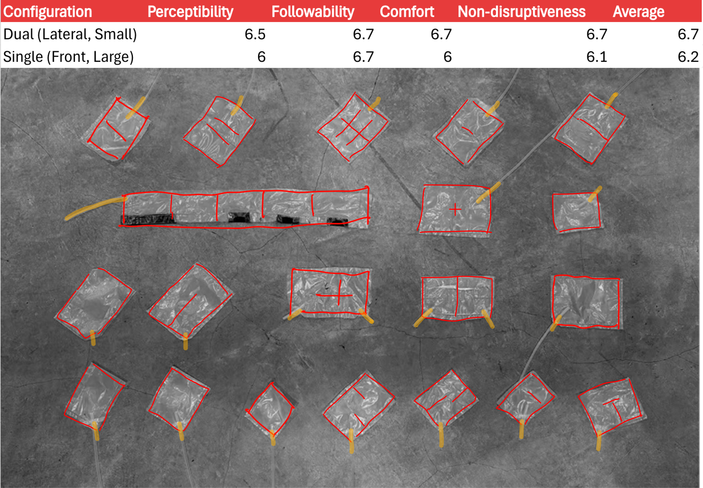
Airbag prototypes developed for the first experiment
Experiment 02
Controlled running evaluation
Six participants tested the pneumatic guidance while running on a treadmill. We examined whether the pressure rhythm remained perceptible during continuous movement, whether it aligned naturally with running pace, and how each guidance mode affected comfort and perceived effort.
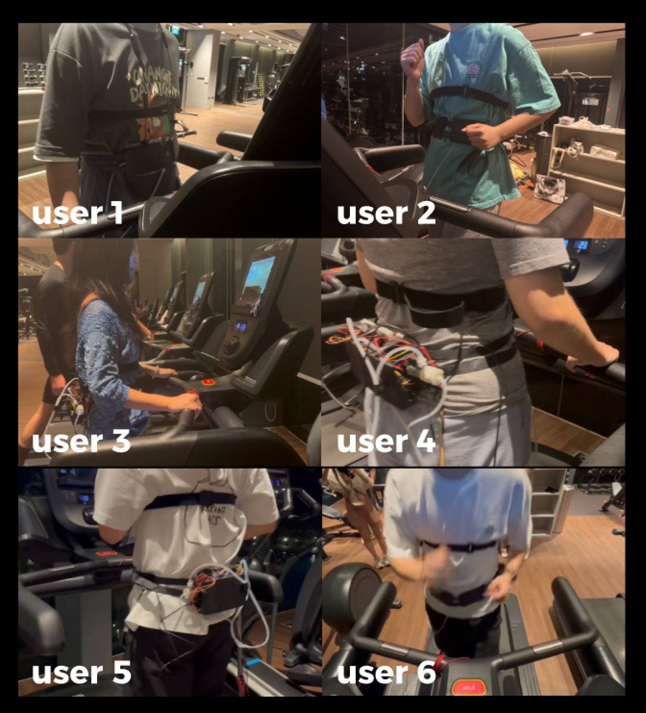
Controlled treadmill sessions with six participants
The questionnaire showed different strengths across the three modes. Train Mode received the highest overall satisfaction; Relieve Mode was perceived as the most comfortable; Run Mode made the rhythm comparatively easy to follow, but still needed improvement in comfort. Across the study, participants rated natural alignment with pace at 4.38/5 and rhythm stability at 4.27/5.
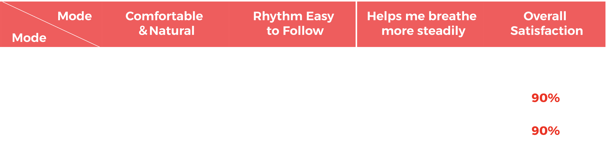
Mode-level questionnaire results from the controlled evaluation
13.46 → 11.39mean reported perceived exertion on the Borg scale
Experiment 03
Outdoor A/B running test
Six participants then completed two five-minute outdoor runs, one with Breatho and one without. Capacitance-based sensing recorded respiratory activity while the device was used in a less controlled setting.
The preliminary traces became more periodic when pneumatic guidance was active. This study supports short-term feasibility rather than long-term training effectiveness; weight, pump noise, rigidity, and comfort remain priorities for the next prototype.
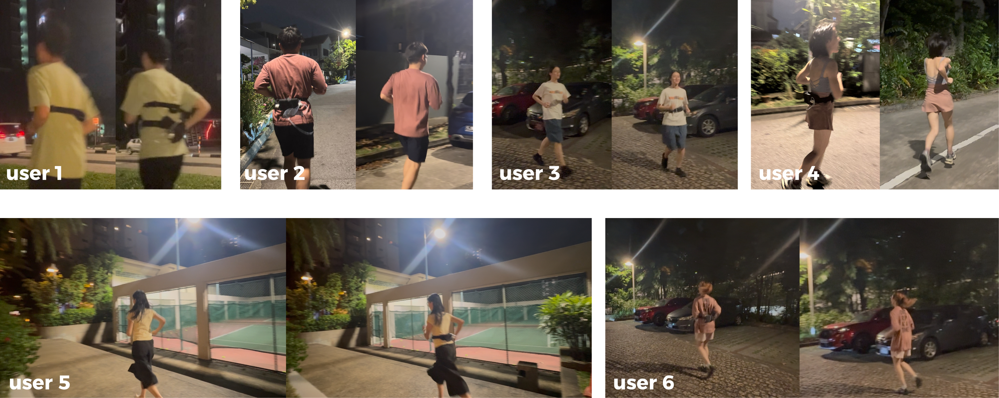
Outdoor running sessions with six participants
Without guidanceWith Breatho
06
Findings and directions for respiratory rhythm training
Repeated body-centred cueing may help runners internalise a stable coordination between steps and breathing.
Breatho links step cadence with body-centred pneumatic feedback, making respiratory timing perceptible during running. The prototype establishes the feasibility of this interaction and identifies pressure distribution, cue timing, and belt fit as central design variables.
The next iteration will focus on a lighter and quieter wearable, personalised timing, and feedback that gradually decreases as the runner becomes familiar with the rhythm. Longer studies are needed to understand whether repeated use supports lasting respiratory coordination without active guidance.
Role: research framing, wearable design, pneumatic prototyping, interaction design, system development, user testing, and visual communication.